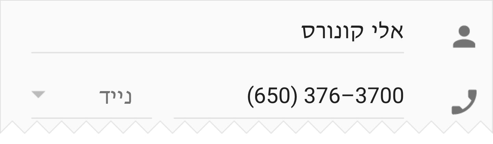
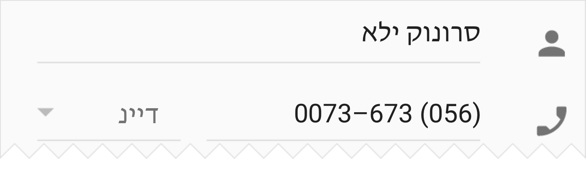
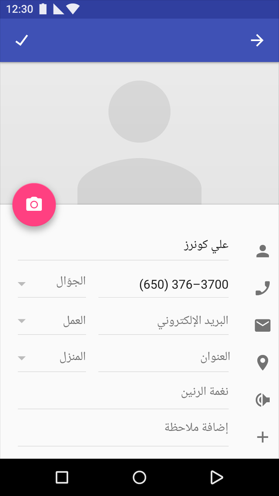
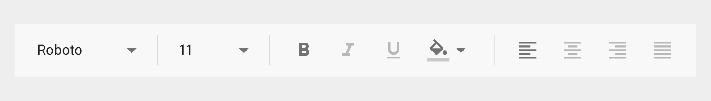
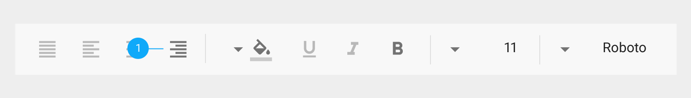
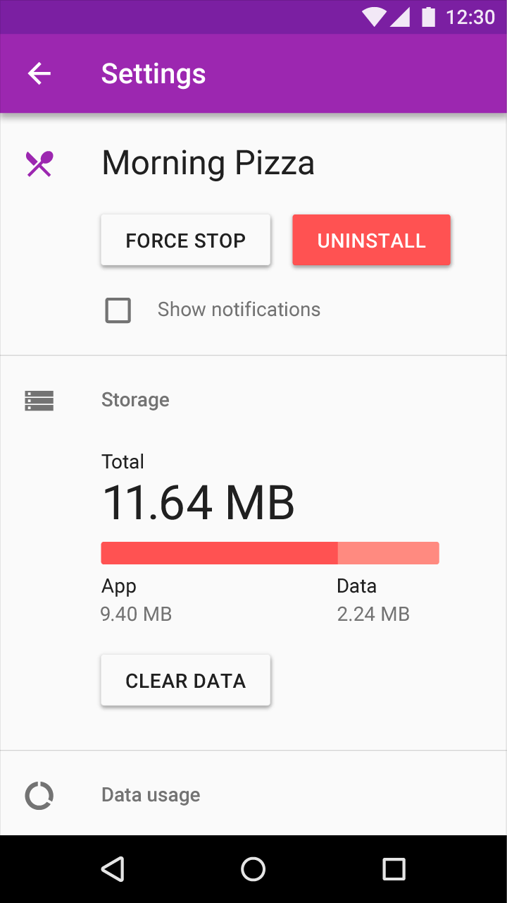
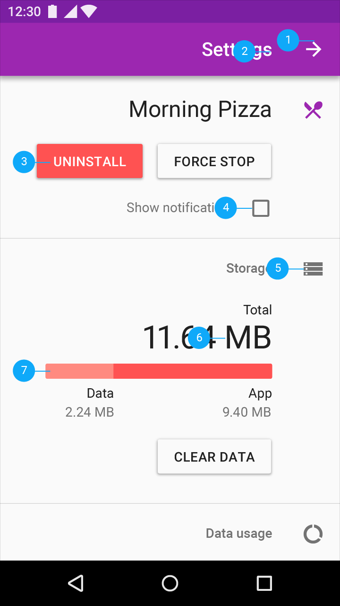

UI mirroring overview
The main difference between left-to-right (LTR) and right-to-left (RTL) language scripts is the direction in which content is displayed:
- LTR languages display content from left to right
- RTL languages display content from right to left
RTL content also affects the direction in which some icons and images are displayed, particularly those depicting a sequence of events.
In general, the passage of time is depicted as left to right for LTR languages, and right to left for RTL languages.
Element | LTR | RTL |
Text | Sentences are read from left to right. | Sentences are read from right to left. |
Timeline | An illustrated sequence of events progresses left to right. | An illustrated sequence of events progresses right to left. |
Imagery | An arrow pointing left to right indicates forward motion: ‚Üí | An arrow pointing right to left indicates forward motion: ‚Üê |
The passage of time is depicted from left to right for LTR languages, and from right to left for RTL languages.
When a UI is changed from LTR to RTL (or vice-versa), it’s often called mirroring. An RTL layout is the mirror image of an LTR layout, and it affects layout, text, and graphics.
When a UI changes from one direction to another, these items are not mirrored:
- Numbers
- Untranslated text (even if it’s part of a phrase)
Text should always be in the correct direction for the language it’s in. For example, any LTR words, such as a URL, will continue to be shown in an LTR format, even if the rest of the UI is in RTL.

Do.
Text and numbers should always be in the correct direction for the language.

Don’t.
LTR text shouldn’t be displayed in reverse order.
When a UI is mirrored, these changes occur:
- Text fields icons are displayed on the opposite side of a field
- Navigation buttons are displayed in reverse order
- Icons that communicate direction, like arrows, are mirrored
- Text (if it is translated to an RTL language) is aligned to the right
These items are not mirrored:
- Icons that do not communicate direction, such as a camera
- Numbers, such as the clock and phone numbers
- Charts and graphs
An English UI in LTR

An Arabic UI in RTL, with numbers presented in LTR

Text editing menu in LTR

Text editing menu in RTL
1. Icons related to bidirectionality are mirrored to reflect the start and end of a line of text

LTR screen
On an LTR screen, the tab for “Item One” is aligned to the left, and users swipe to the left to see more tabs.
Touch target height: 48dp
Screen edge margin before first tab: 72dp
Tab labels bottom padding: 20dp
Tab labels right and left padding: 12dp

RTL screen
On an RTL screen, the tab for “Item One” is aligned to the right, and users swipe to the right to see more tabs.
Touch target height: 48dp
Screen edge margin before first tab: 72dp
Tab labels bottom padding: 20dp
Tab labels right and left padding: 12dp

LTR screen

RTL screen
Title, icons, and UI elements are displayed flowing from right to left
1. Back button points to the right
2. Text is right-aligned
3. Primary and secondary buttons are mirrored to match reading direction
4. Checkbox appears to the right of text
5. Icons that do not communicate direction are not changed
6. Placement of units may vary across languages
7. Progress bars fill in the same direction as content is read

LTR
Navigation, overflow menu, and icons displayed left-to-right
Icon padding from screen edge: 16dp
Title distance from screen edge: 72dp
Padding below title: 20dp
Navigation bar height: 56dp
Overflow menu padding: 16dp

RTL
Navigation, overflow menu, and icons switch sides in the RTL layout
Icon padding from screen edge: 16dp
Title distance from screen edge: 72dp
Padding below title: 20dp
Navigation bar height: 56dp
Overflow menu padding: 16dp

LTR
Padding and margin around icons and text for LTR
List item height: 72dp
Icon margin from left screen edge: 16dp
List item distance from left screen edge: 72dp

RTL
When mirroring the layout, padding and margin around icons and text also switch placement to match RTL layouts.
List item height: 72dp
Icon margin from right screen edge: 16dp
List item distance from right screen edge: 72dp